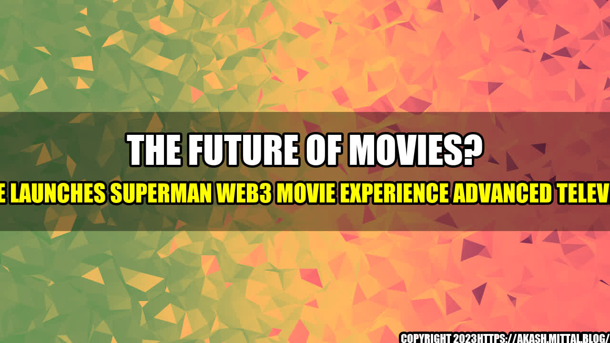

The Future of Movies? WBHE Launches Superman Web3 Movie Experience Advanced Television

Have you ever found yourself wishing you could be inside your favorite movie? To feel like you're part of the action, as if you could reach out and touch the characters? Well, Warner Bros. Home Entertainment (WBHE) is trying to bring that experience to life with the release of Superman Web3 Movie Experience Advanced Television.
This new technology promises to revolutionize the way we watch movies, immersing viewers in a 3D world that feels more like real life than ever before. But how does it work, and what can we expect from this futuristic form of cinema?
How it Works
The Superman Web3 Movie Experience is a collaboration between WBHE and a team of virtual reality experts. It uses advanced technology to create a fully immersive experience, using a combination of 3D scanning, motion capture, and artificial intelligence.
Viewers will need a specialized headset and television with the advanced technology built in, and the movie itself is specially designed to take advantage of these features. As you watch, the characters and scenery will be projected in 3D all around you, putting you right in the middle of the action.
But it's not just a visual experience - the technology also includes haptic feedback, meaning that you'll feel physical sensations as if you're part of the scene. You might feel the rumble of a car engine as it races by, or the impact of a laser blast on your chest.
The Benefits
So what are the benefits of this groundbreaking technology over traditional cinema?
- Immersive Experience - The most obvious benefit is undoubtedly the level of immersion that the Web3 Movie Experience offers. It's the closest we've come yet to actually being inside a movie, allowing us to experience the story in a whole new way.
- Increased Engagement - Because the experience is so immersive, viewers are more likely to stay engaged throughout the entire movie. This could be a game-changer for filmmakers, as it could allow for more complex and layered stories that require longer attention spans.
- Better Value - While the technology is still new and expensive, it has the potential to provide better value in the long run. Instead of paying for separate tickets for each family member, you could all watch the Web3 Movie Experience together on your own TV.
The Potential
As exciting as this technology is, it's still in its infancy. But what kind of potential could it have for the future of cinema?
- The Possibility of Interactivity - While the Web3 Movie Experience is immersive, it's still a passive experience. But in the future, there could be potential for viewers to interact with the film, making choices that affect the storyline in real time. This could create a whole new kind of movie, where each viewing is unique.
- New Possibilities for Filmmakers - With the advanced technology of Web3, filmmakers will be able to create movies like never before. The possibilities for new genres, unique scenery, and interactive storytelling are endless.
- Increased Accessibility - As the technology becomes more widespread and less expensive, it could become more accessible to people who might not have been able to experience cinema before. This could mean that movies become more diverse and inclusive as a result.
Conclusion
The Superman Web3 Movie Experience is just the beginning of a whole new era of cinema. While the technology is still expensive and limited, the potential for the future is endless. The benefits of the Web3 movie experience over traditional cinema are clear, and we can't wait to see where this technology takes us in the future.
- 3D technology could revolutionize the way we watch movies
- The Superman Web3 Movie Experience promises to immerse viewers in a fully 3D experience that feels like real life
- The technology has the potential to increase engagement, provide better value, and create new opportunities for filmmakers
- The future could bring even greater potential for interactivity, unique storytelling, and increased accessibility
- So if you're a fan of movies, keep an eye on the Web3 Movie Experience - it could change everything we know about cinema as we know it.
Curated by Team Akash.Mittal.Blog
Share on Twitter Share on LinkedIn